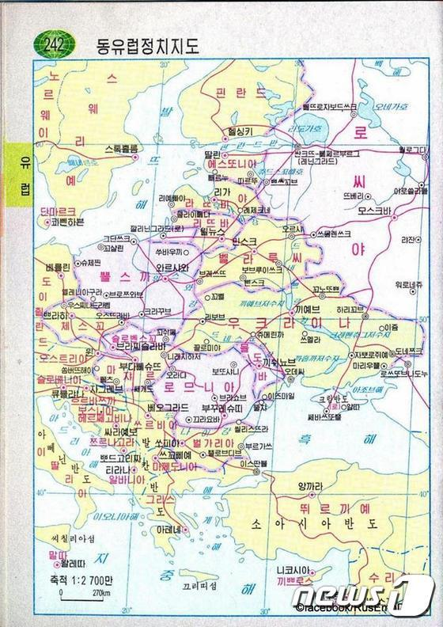
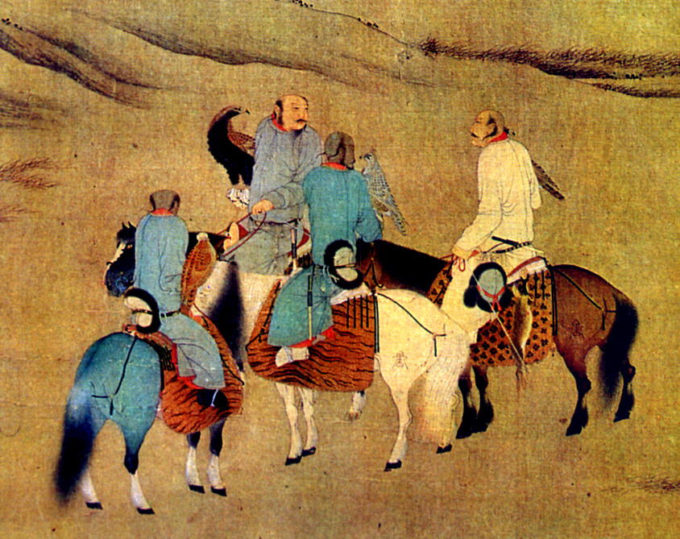
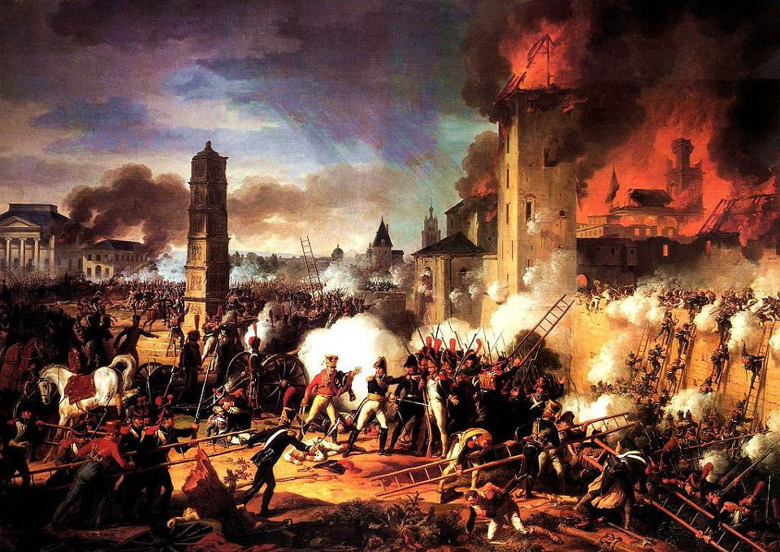
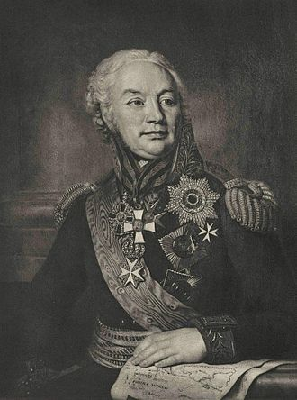

결승전 상대가 크로아티아가 아니라 흐르바츠카 ? - Exonym과 Endonym
게시: 2018-07-16T06:30:00+09:00
이번 월드컵에서 결승까지 올라간 발칸 반도의 소국 크로아티아(Croatia)는 여러가지 단편적인 사실로 우리에게 알려져 있습니다. 가령 사무실 근무자들의 멍에처럼 느껴지는 넥타이의 원조 국가라고 알려져 있지요. 프랑스어로 넥타이를 끄라바뜨(cravate)라고 하는데, 이 단어는 동시에 '크로아티아산의'라는 형용사이기도 합니다. 이는 17세기 전반기의 30년 전쟁 때 프랑스 측에서 복무한 크로아티아 용병들이 자기 나라 전통의 작은 매듭 수건을 목에 찬 것이 파리 사람들의 눈에 멋있게 보여서 유행했기 때문에 이런 이름이 붙었다고 합니다. 그 밖에 그 보병들의 용맹함과 제2차 세계대전 때 나찌 측에 협력한 어두운 역사 등으로 알려져 있고, 특히 두브로브니크의 아름다운 경치가 최근 우리나라에도 잘 알려져 있습니다.
(17세기 끄라바뜨(cravate)를 목에 맨 크로아티아 병사입니다.)
그런데 이번 월드컵에서 크로아티아가 러시아와 승부차기 끝에 승리하는 장면을 보니 벤치에 앉아있던 크로아티아 선수들이 입고 있던 트레이닝복 등판에 Hrvatska(흐르바츠카)라고 쓰인 것을 보고 비로소 크로아티아라는 것은 그 나라의 영어식 이름일 뿐이고 크로아티아인들은 자기 나라를 흐르바츠카라고 부른다는 것을 알게 되었습니다. 그걸 보니 최근 우리 팀 젊은 사원 하나가 해준 이야기가 기억나더군요. 그 친구가 대학 졸업할 때 즈음인가... 인턴인가 뭣 때문인가 캐나다에 갔다가 유럽에서 온 젊은이들을 만났는데, 어디서 왔냐고 물으니 '도이칠란트'라고 답을 하더랍니다. 제가 놀란 것은 그 다음 부분이었지요. 이 친구는 그 말을 듣고 '도이칠란트가 대체 어디 있는 나라지 ?'라고 생각했더라는 거에요. 아니, 대학 졸업자가 도이칠란트가 독일이라는 것을 모르다니 ! 제가 고등학교 다니던 시절에는 사회과 부도나 세계사 교과서에 나오는 지도에 '도이칠란트(독일)'이라고 표기가 되어 있었기 때문에 잘 알고 있었거든요.
(좌측 하단의 선수가 입고 있는 트레이닝복 등에 쓰인 것은 분명히 저 선수 이름은 아니지요.)
그걸 보니까 전에 본 북한 지도가 기억나더군요. 거길 보니 독일은 도이칠란트, 러시아는 로씨야, 루마니아는 로므니아, 스웨덴은 스웨리예, 폴란드는 뽈스까, 헝가리는 마쟈르라고 표기되어 있더라고요. 폴란드라는 것도 영어식 이름에 불과하고 폴란드인들은 자기 나라를 폴스카(Polska)라고 부른다는 것은 월드컵 경기들을 통해 이미 널리 알려진 사실입니다. 일본도 전에 올림픽에서였나 아시안게임때였나 등에 적힌 국명은 Japan이 아니라 Nippon이라고 적었던 것을 봤는데, 그런 국제 경기를 통해서 자국의 제대로 된 이름을 널리 알리는 것도 일종의 국가 브랜드 향상인 모양입니다. 생각해보면 제가 어릴 때만 해도 아일랜드를 아일랜드식인 에이레(Éire)라고도 불렀는데, 요즘은 아일랜드라는 영국식 이름으로만 통하는 것 같습니다. 스웨덴도 자국을 스웨리예(Sverige)라고 부르는 것은 어디서 주워들어 알고 있었는데, 헝가리처럼 월드컵 등에 자주 나오는 나라가 아닌 경우 자국을 뭐라고 부르는지 모르고 있었습니다. 마쟈르족이 세운 나라라고 정말 마쟈르라고 부르나 싶어 이번 기회에 찾아보니 헝가리어로는 헝가리 나라 이름이 Magyarország(마갸로~삭)으로 부른다고 하네요. 마쟈르(magyar)의 나라(ország)라는 뜻이랍니다.

다만 핀란드는 북한 지도에도 그냥 영어식으로 핀란드라고 되어 있는데, 실제로는 핀란드 사람들은 자국을 수오미(Suomi)라고 부른다고 알고 있습니다. 러시아어로는 핀란드를 핀란디아(Финляндия)라고 부르는데, 혹시 북한 교과서 지도에 표기된 이름들이 그 나라 사람들이 부르는 그 나라 이름이 아니라 그냥 러시아어로 된 이름들을 표기한 것인가 생각도 들었는데, 꼭 그런 건 아닌 것 같습니다. 가령 폴란드는 러시아어로 뽈스까가 아니라 뽈샤(По́льша)라고 하고, 스웨덴도 스웨리예가 아니라 쉬베찌야(Шве́ция)라고 합니다. 그러니까 북한 지도는 그냥 최대한 그 나라 고유 명칭으로 그 나라 이름을 표기하려고 한 것이고, 핀란드는 아마 지도 제작자가 실수했거나 북한에서도 핀란드가 그냥 핀란드라고 더 많이 알려져 있는 모양이에요. 우리나라에서 류베이라는 이름보다는 유비라는 이름이 이미 너무 익숙하기 때문에 굳이 바꿔 표기하지 않는 것처럼요.
모든 나라에는 자기들이 부르는 자기 나라 이름(Endonym)과 외국인들이 부르는 나라 이름(Exonym)이 따로 있습니다. 생각해보면 너무나 당연한 일입니다. '우리나라'라는 개념 자체가 외국이라는 개념 때문에 생겨난 것이고, 그 나라 이름은 자국민들이 정해서 부르는 것보다는 그 나라 말을 모르는 외국인들이 자기들끼리 정해서 부르는 일이 많기 때문입니다. 그런데 접하는 외국이 많으면 많을 수록 exonym도 많아지고, 그 각각의 이름들에는 나름대로의 역사와 사연이 젖어들게 됩니다.
가령 우리 회사 젊은 사원이 몰랐던 독일의 exonym은 영어로는 다들 아시다시피 Germany(저머니)이고 불어로는 Allemagne(알마뉴), 스페인어로는 Alemania(알레마니아)라고 합니다. 영어 이름의 기원은 오히려 고대 프랑스어에서 나왔다고 합니다. 당시 프랑스에 살던 골(Gaul)족은 라인강 너머에 사는 사람들을 게르마니(Germani)라고 불렀는데, '이웃' 또는 '숲 사람들'이라는 뜻이었답니다. 골을 정복한 로마인들은 골 사람들로부터 라인강 너머 부족의 이름을 배웠고, 그래서 그 땅을 게르마니아(Germania)라고 불렀는데, 그 단어가 영어로 이어진 것입니다. 그런데 정작 프랑스나 스페인에서는 알마뉴나 알레마니아라고 부르는 것은 알사스 및 스위스 인근에 살던 부족인 알레마니(Alemanni)라는 게르만 일족 때문입니다. 프랑스는 알사스 지방을 통해 독일과 접했던 프랑스 사람들이 게르만 부족 전체를 알레마니라는 이름으로 인식하게 되었고, 그 결과 직접 국경을 맞대지 않은 스페인까지도 독일을 알레마니아라고 부르는 것이지요.
이건 중국의 exonym이 크게 China와 Cathay 두 계열로 나뉜 것과도 비슷합니다. 영어로는 China(차이나), 스페인어로도 China(치나), 프랑스어로도 Chine(신느)라고 불리는 중국은, 러시아어로는 Китай(키타이)라고 불립니다. 옛 영어에서도 중국을 Cathay(캐쎄이)라고 부르지요. 다들 아시다시피 차이나라는 이름은 중국 최초의 통일 왕국인 진(Qin)나라에서 비롯된 이름이라고 합니다. 그런데 캐쎄이 또는 키타이라는 이름은 어디서 나왔을까요 ? 우리나라와도 관련이 깊었던 거란족, 즉 키탄(Khitan)족 때문이라고 합니다. 요나라를 세워 송나라를 압박하기도 했고, 나중에 여진족의 금나라에 쫓겨 서쪽 중앙아시아로 간 뒤 거기서 서요(Qara Khitai, 검은 키타이)를 세워 맹위를 떨쳤던 거란족은 당시 아시아 동부 전체를 쥐고 흔들던 대단한 민족이었습니다. 그들을 통해 중국을 접한 외국인들이 중국을 키타이라고 잘못 이해했기 때문에 러시아어 및 옛 영어에서 중국을 키타이 및 캐쎄이라고 부르게 된 것입니다.

(매사냥을 즐기는 거란족. (몽골인처럼 보이긴 하네요...) 그렇게 강대하던 거란족을, 그것도 전성기에 완패시킨 나라가 바로 고려입니다. 덕분에 거란에게 벌벌 떨던 송나라와의 관계에서 고려는 동방의 벌꿀오소리처럼 아주 오만방자한 태도를 취했다고 하는데, 그런 고려가 대한민국의 exonym의 유래가 된 것도 전혀 무리가 아닌 것 같습니다. 고구려도 고려라는 이름을 쓰기도 했으니 더욱 그렇습니다. 임진왜란 당시에도 일반 중국사람들은 조선이라는 이름을 잘 모르고 그냥 고려라고 불렀다는데, 당태종도 물리치고 거란족도 물리친데다가 몽골의 쿠빌라이칸도 각별히 대했다는 그 킹왕짱 쎈 고려가 왜에게 불과 1달 만에 수도를 털렸다고 하니 처음에 명나라에서는 그 사실을 도저히 믿을 수가 없었다고 합니다. '그럴 리가 없다, 이거 혹시 고려가 왜와 결탁하여 명나라를 치려는 것 아닐까 ?'라는 의심이 명나라 조정에 파다했다고 하네요.)
제가 나폴레옹 전쟁사를 연재하면서 어려움을 겪는 것 중 하나가 각 지방과 도시의 이름을 대체 어떤 식으로 표기해야 하느냐 하는 것입니다. 가령 가스코뉴의 상남자 란(Jean Lannes) 원수가 직접 사다리를 타고 그 성벽을 기어오르려 했다는 1809년 레겐스부르크(Regensburg) 전투는 흔히 라티스본(Ratisbon) 전투로 알려져 있습니다. 이 레겐스부르크라는 도시도 유럽의 많은 도시들처럼 로마군이 지은 요새에서 비롯된 도시인데, 원래는 Castra Regina, 즉 레긴(Regin) 요새라는 곳이었습니다. 거기에 레겐(Regen) 강이 흐르고 있거든요. 그런데 바이에른에 있는 이 도시에는 여러가지 이름이 있습니다. 폴란드어로는 Ratyzbona, 체코어로는 Řezno, 그리고 프랑스어로는 Ratisbonne이었지요. 이 도시는 바로 옆을 흐르는 레겐 강 덕분에 상업이 활발했고, 특히 13세기 전반에 자유도시가 되면서 더욱 번성했습니다. 특히 신성로마제국의 내각이 이 도시에 상주하게 되면서 더욱 발전했지요. 덕분에 신성로마제국과 교역하던 프랑스니 폴란드니 체코니 하는 외국에서도 이 도시 이름을 입에 담게 되었는데, 고대 시절부터 전해오던 고유의 이름 "Radasbona", "Ratasbona", "Ratisbona" 등의 이름으로부터 자기들 입맛대로 이름을 지은 것이지요. 영국인들은 이 도시를 프랑스인들로부터 전해들었는지 라티스본(Ratisbon)이라고 불렀던 것입니다. 덕분에 이 전투의 승자인 프랑스측이나, 제가 주로 읽는 영어 문서에서는 대부분 라티스본 전투라고 부릅니다. 하지만 분명히 이 전투는 레겐스부르크에서 벌어진 것이니 레겐스부르크 전투라고 부르는 것이 맞지 않나 싶습니다.

(레겐스부르크 전투, 혹은 라티스본 전투입니다. 이 전투에서 프랑스군이 신속하게 이 도시를 점령해야 카알 대공이 이끌고 도망치는 오스트리아군 주력을 요격할 수 있었습니다. 성벽에 대한 공격이 계속 실패하자 마침내 란 원수가 '난 프랑스 원수이기 이전에 일개 척탄병이었고, 지금도 그렇다'라며 직접 사다리를 들고 성벽으로 돌격하려 하여 부관들이 기겁했다는 전설이 있습니다. 다행히 그런 란 원수의 행동에 스스로 부끄러움을 느낀 병사들이 분발 돌격하여 마침내 도시를 함락시켰습니다. 그래도 카알 대공은 결국 놓치고 말았고, 결국 다시 맞붙은 아스페른-에슬링 전투에서 나폴레옹은 카알 대공에게 패배하고 란 원수도 전사하고 맙니다.)
이 레겐스부르크가 위치한 바이에른(Bayern)만 해도 헷갈립니다. 바이에른의 영어식 이름은 바바리아(Bavaria)거든요. 이걸 영어식으로 바바리아라고 표기해야 할지 저도 모르는 독일어로 바이에른이라고 해야 할지 고민이 많이 되었습니다. 제 생각에는 영어식 exonym인 바바리아보다는 독일 현지의 endonym인 바이에른이라고 적는 것이 나을 것 같아 지금도 그렇게 적습니다만, 여기에도 고민이 따릅니다. 제가 외국어 여러개에 능통하면 좋겠으나 그러지 못하여 주로 영어 문서를 보는데, 그러다보니 어떤 지명을 적을 때 이게 영어식 exonym인지 제대로 된 endonym인지 확신이 안 갈 때가 많습니다. 그래도 이탈리아나 스페인, 독일 정도는 눈치로 어느 정도 파악이 되는데, 폴란드나 체코, 헝가리 지역으로 들어가면 정말 뭐가 뭔지 전혀 모르겠더라고요. 그럴 바에야 차라리 일관성 있게 영어식 exonym을 쓰는 것이 낫지 않을까도 합니다만, 그래도 저도 이럴 때 아니면 언제 그런 먼 외국 도시의 exonym과 endonym을 구별해볼까 싶어서 틀릴 것을 각오하고 그냥 최대한 endonym을 쓰려 노력하고 있습니다. 틀린 것을 보시면 댓글로 지적해주시면 정말 고맙겠습니다. 가령 제가 플로렌스는 꼭 가보고 싶지만 피렌체는 별로 가고 싶지 않다는 말을 써놓으면 너그러이 이해해주시는 분도 있겠지만 비웃는 분들이 더 많지 않겠습니까 ? 댓글로 지적질 해주시는 것은 항상 고맙게 생각하고 있습니다.
가장 황당할 때는 사람 이름조차도 그렇게 영어식 이름과 현지식 이름이 따로 있다는 것입니다. 가령 영어의 존(John)이 프랑스어의 장(Jean), 독일어의 요한(Johan)에 해당하는 것은 널리 알려진 사실인데, 제가 읽는 영어 문서에서는 프랑스 사람들이나 독일 사람들 이름을 그렇게 제멋대로 영어식 이름으로 써놓는 경우가 많습니다. 대표적인 것이 독일의 카알(Karl)을 그냥 영어식 찰스(Charles)라고 적거나 프랑스의 프랑수와(Francois)를 영어식 프랜시스(Francis)로 적는 식입니다.
러시아 쪽으로 가면 더 헷갈립니다. 가령 예카테리나(Екатерина, Yekaterina)를 캐서린(Catherine)으로 적는 것은 양반입니다. 우리나라에서 북스게브덴이라고 널리 알려진 장군 이름이 영어 문서에서는 Buxhoevden이라고 나오더라고요. 이건 또 사연이 깊은 것이, 이 북스게브덴 장군은 원래 작센 왕국에 뿌리를 둔 에스토니아 출신의 러시아 귀족입니다. 그러다보니 러시아식 이름은 Фёдор Фёдорович Буксгевден, 즉 표도르 표도로비치 북스게브덴(Fyodor Fyodorovich Buksgevden)이 맞습니다. 그러나 이 사람에게는 독일식 이름이 따로 있어서 프리드리히 빌헬름 폰 북스회브덴(Friedrich Wilhelm von Buxhoevden)이라고 불립니다. 그리고 영어 문서에서는 이 뭐라고 읽어야 할지 고민이 되는 Buxhoevden이라는 것이 주로 표기됩니다. 아마 영국인들은 천연덕스럽게 프레드릭 윌리엄 (Frederick Willian) 폰 북스호이브덴 정도로 읽지 않을까 싶습니다.

(북스게브덴 장군입니다. 1805년 아우스테를리츠에서 나폴레옹의 승리에 꽤 큰 공로를 세운 러시아 장군입니다. 전투 내내 술에 취해서 거의 지휘관 노릇을 거의 못했거든요. 그런 그도 다행히 1812년 나폴레옹이 참패를 겪는데 큰 공로를 세웁니다. 61세의 나이로 1811년 병으로 죽어버렸기 때문입니다. 아마 간암이나 간경화 아니었을까요 ?)
외국계 회사에서 일하시는 분들 중에는 원래 한국 이름 외에 영어 이름을 가진 분들이 종종 있습니다. 어떤 분들은 눈꼴 사납다고 손가락질 하시는 분들도 있는데, 꼭 욕할 일만은 아닙니다. 실제로 본사나 기타 다른 나라 사람들과 회의를 하거나 전화, 이메일을 주고 받을 때, 그들로서는 발음하기 어렵고 외우기도 힘든 한국 이름을 고집하는 것보다는 간편한 영어식 이름을 대는 것이 상대방의 기억에 훨씬 더 잘 남거든요. 제가 일하는 곳이 IT 회사이다보니 본사에도 인도인들이 많은데, 저만하더라도 긴 인도식 이름보다는 영어식 이름을 가진 사람이 훨씬 친근감이 느껴지는 것이 사실이니, 반대로 저희들도 영어식 이름을 가지는 것이 유리하겠지요. 그래도 저는 내일 모레 50인 꼰대답게 그냥 한국식 이름을 고집하고 있습니다만, 젊은 분들은 만약 자기 이름이 외국인들 발음에 복잡한 형태라면, 영어식 닉네임 하나 준비하는 것이 뭐 꼭 사대주의라고 부끄러워할 일은 아니라고 생각합니다. 이름이라는 것은 상대가 나를 타인으로부터 구분하기 위해 만들어진 것이니, 타인에게 잘 기억될 수 있고 부르기 쉬운 것이 본연의 임무에 좋은 것이거든요.
Source : https://en.wikipedia.org/wiki/English_exonyms
http://mentalfloss.com/article/30810/why-are-there-different-names-same-country
http://m.news1.kr/articles/?3122718#imadnews
https://en.wikipedia.org/wiki/Battle_of_Ratisbon
https://en.wikipedia.org/wiki/Friedrich_Wilhelm_von_Buxhoeveden